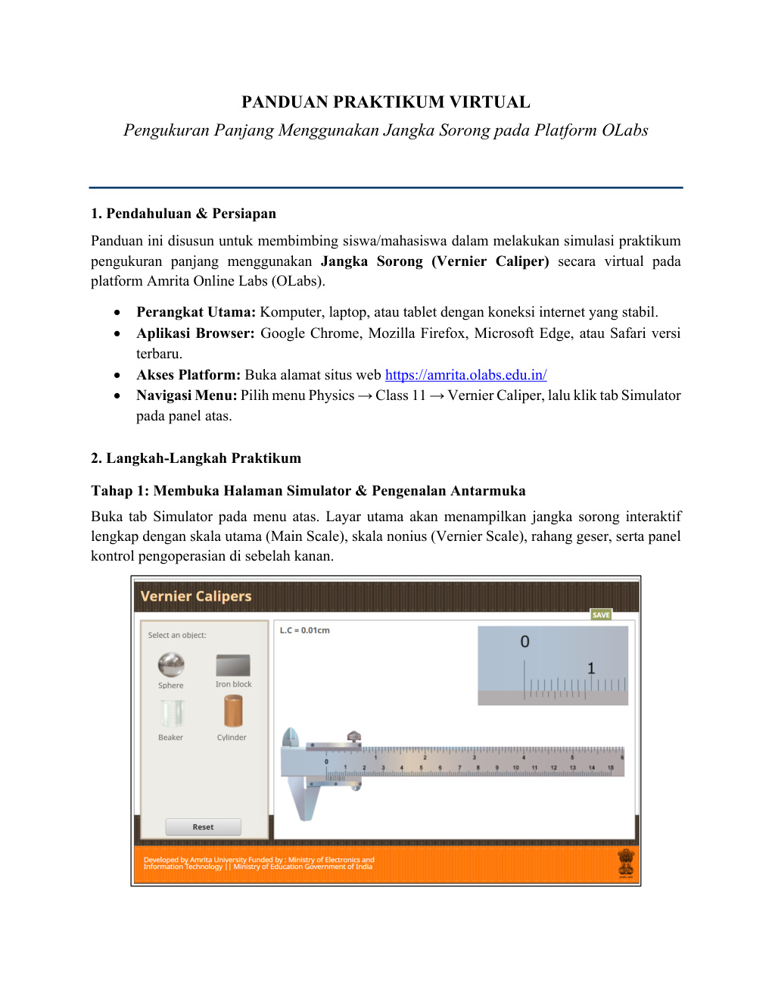
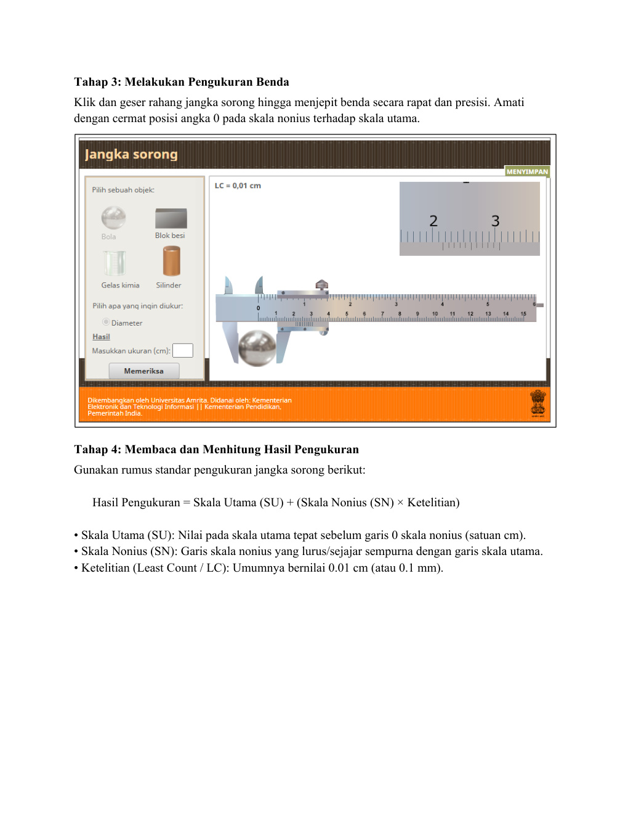
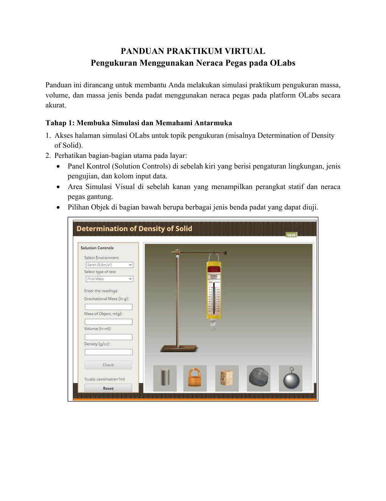
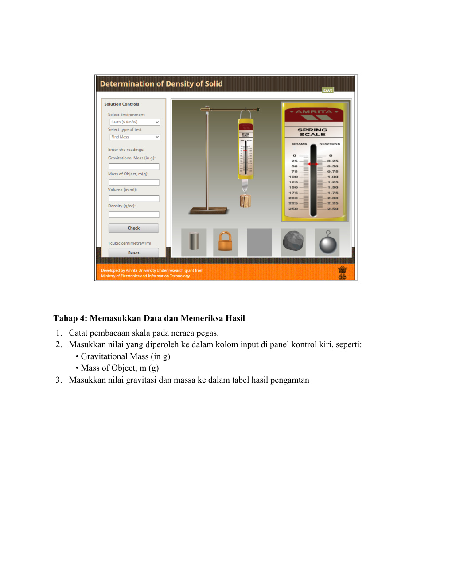
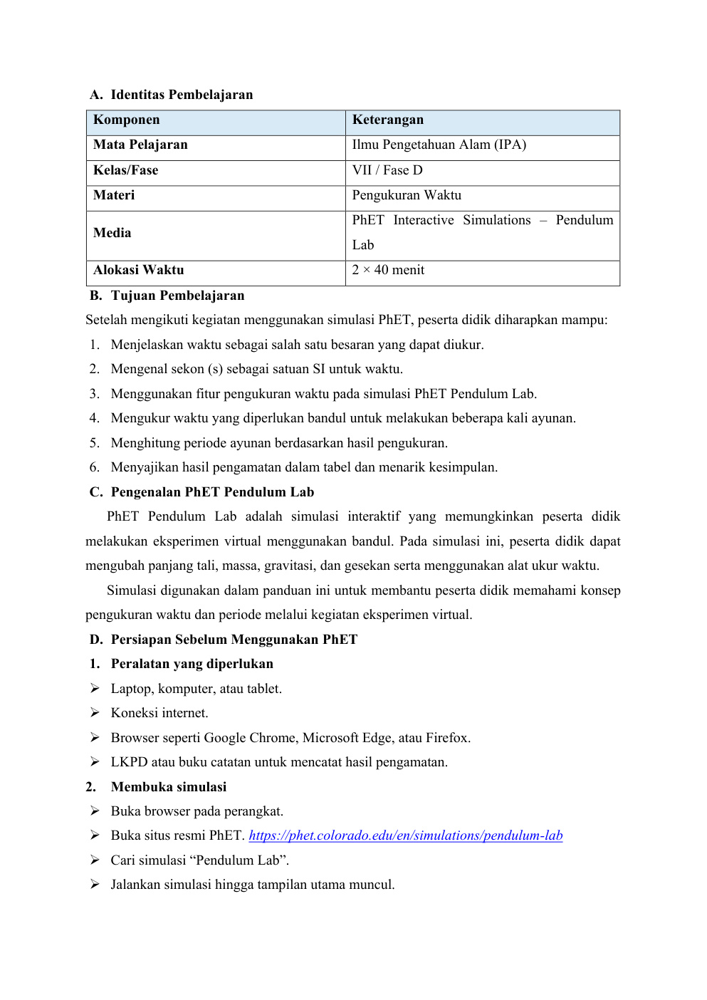
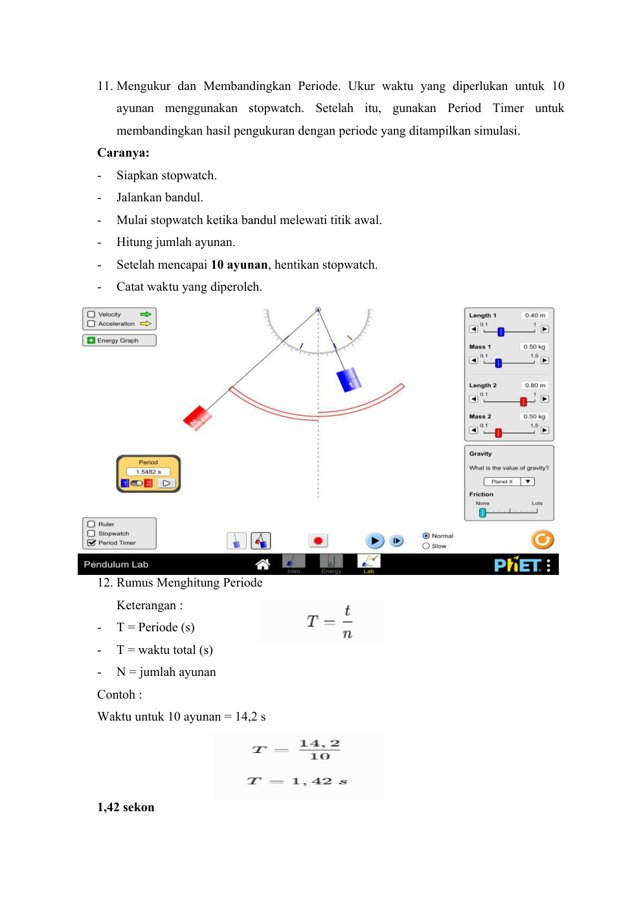

Petualangan Pengukuran
Jelajahi Dunia Sains IPA Kelas VII SMP • Kurikulum Merdeka
Selamat datang di Laboratorium Virtual Petualangan Pengukuran! Di sini kamu akan belajar konsep besaran & satuan, mengoperasikan alat ukur nyata secara virtual (Jangka Sorong, Neraca Pegas, & Bandul), menyimak video praktikum, dan menguji kemampuan penalaran sainsmu.
Masukkan identitasmu untuk memulai petualangan virtual sains:
Halo, Siswa! 👋
Pilih misi petualangan sainsmu hari ini:
Bahan Ajar
Presentasi interaktif besaran pokok & satuan SI.
Lab Virtual
Simulasi geser jangka sorong, neraca pegas, & bandul.
Kuis HOTS
10 Soal evaluasi penalaran & pembahasan interaktif.
Video Praktikum
Video panduan praktikum pengukuran waktu.
Panduan Alat
Petunjuk penggunaan OLabs & PhET Pendulum.
Modul Ajar
Capaian TP, sintaks Discovery Learning & PDF.

Hasil Pembacaan:
Tebak Pembacaan Skala:
Simulasi berjalan di dalam aplikasi. Jika koneksi sekolah membatasi akses server OLabs, gunakan mode Lab Interaktif Internal (Canvas) di atas.
Gantungkan Benda Uji:
Pilih Gravitasi Planet:
Simulasi berjalan di dalam aplikasi. Tentukan massa beban dari pertambahan panjang pegas dan gaya berat.
Simulasi berjalan langsung di dalam aplikasi! Atur panjang tali, massa bandul, gesekan udara, dan gunakan stopwatch bawaan PhET untuk mengukur 10 ayunan.
📋 Lembar Kerja Praktikum (LKPD) Digital
| Objek Uji | Dimensi | Skala Utama (SU) | Nonius (SN) | Hasil (SU + SN×0.01) |
|---|---|---|---|---|
| Koin Rp1.000 | Diameter | |||
| Silinder Logam | Tinggi |
Simulasi berjalan langsung di dalam aplikasi! Atur panjang tali, massa bandul, gesekan udara, dan ukur waktu periode ayunan secara interaktif.
Sangat Baik (Lulus)
Ulasan & Pembahasan Kunci Jawaban Lengkap
Pelajari pembahasan setiap butir soal untuk memperdalam pemahaman konsep sainsmu:
⏱️ Panduan Praktikum Pengukuran Waktu & Periode:
- 1 Ayunan Penuh: Gerak bolak-balik mulai dari simpangan awal kembali ke titik semula (A ➔ B ➔ C ➔ B ➔ A).
- Pengukuran Waktu: Catat waktu untuk 10 kali ayunan penuh menggunakan stopwatch secara akurat.
- Perhitungan Periode (T): Dihitung dengan rumus
T = t / n(waktu total dibagi 10 ayunan). - Kesimpulan Penting: Periode ayunan dipengaruhi oleh panjang tali, dan TIDAK dipengaruhi oleh massa beban bandul!
📏 Panduan Praktikum Pengukuran Panjang (Jangka Sorong):
- Skala Utama (SU): Baca nilai pada batang tetap sebelum angka 0 skala nonius dalam satuan cm (misal: 2,3 cm).
- Skala Nonius (SN): Cari garis nonius yang berimpit tegak lurus dengan garis skala utama (misal: garis ke-4).
- Rumus Pengukuran:
Hasil = SU + (SN × 0,01 cm). - Contoh Pembacaan: 2,3 cm + (4 × 0,01 cm) = 2,34 cm.
⚖️ Panduan Praktikum Pengukuran Massa (Neraca Pegas):
- Penyesuaian Titik Nol: Pastikan jarum penunjuk tepat pada garis 0 Newton sebelum diberi beban (zero error correction).
- Pembacaan Gaya Berat (w): Gantung beban di kait neraca dan catat nilai gaya tarik dalam satuan Newton (N).
- Perhitungan Massa (M): Hitung massa dengan rumus
M = w / g(dengan percepatan gravitasi g = 9,8 m/s²). - Contoh: Jika w = 2,45 N pada g = 9,8 m/s², maka massa benda M = 0,25 kg (250 gram).
Panduan Jangka Sorong (OLabs)
Rumus Pengukuran: Hasil = SU + (SN × 0,01 cm)
Ketelitian: 0,01 cm (atau 0,1 mm). Cocok untuk mengukur diameter bola/koin, tebal balok, dan kedalaman bejana.
📥 Unduh Dokumen PDF

Panduan Neraca Pegas (OLabs)
Rumus Menghitung Massa: M = w / g
w = gaya berat yang terbaca pada skala neraca (Newton), g = percepatan gravitasi (9,8 m/s² di Bumi).
📥 Unduh Dokumen PDF

Panduan Pengukuran Waktu & Bandul (PhET)
Rumus Menghitung Periode: T = t / n
Lakukan 10 ayunan dan hitung rata-rata waktu untuk meminimalkan galat pengukuran manual.
📥 Unduh Dokumen PDF

Modul Ajar IPA: Materi Pengukuran
Fase D • Kelas VII SMP • Model: Discovery Learning
Menjelaskan besaran & satuan SI, mengukur panjang, massa, dan waktu secara virtual dengan ketelitian minimal 80%.
1. Stimulasi ➔ 2. Identifikasi Masalah ➔ 3. Pengumpulan Data ➔ 4. Pengolahan Data ➔ 5. Pembuktian ➔ 6. Kesimpulan.
Bernalar Kritis, Mandiri, Gotong Royong, dan Kreatif saat melaksanakan eksperimen.